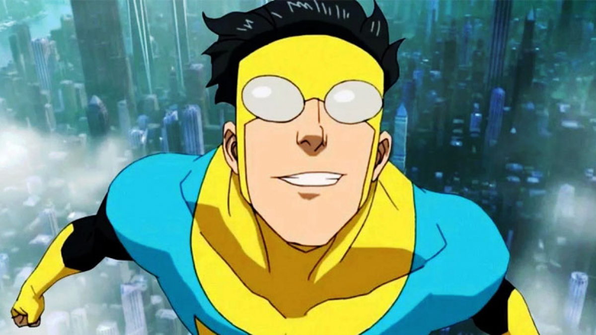

About Invincible
Seventeen-year-old Mark Grayson is just like every guy his age, except that his father is Omni-Man, the most powerful superhero on the planet. As Mark develops powers of his own, he discovers his father's legacy may not be as heroic as it seems.
Mark Grayson as Invincible
What you need to know about Mark Grayson
- His dad is Omni-Man the most powerful superhero on the planet.
- He's half Viltrumite, a race of extremely powerful intergalactic conquerors
- He's trying to get through high school while also learning how to be a superhero
People in Mark/Invincible's life
Debbie Grayson is his mom and Nolan Grayson is his dad and also Omni-Man. We'll also meet the likes of Atom Eve, William, Cecil Steadman, the Guardians of Globe, the Mauler Twins, Art Rosenbaum, and a lot more.